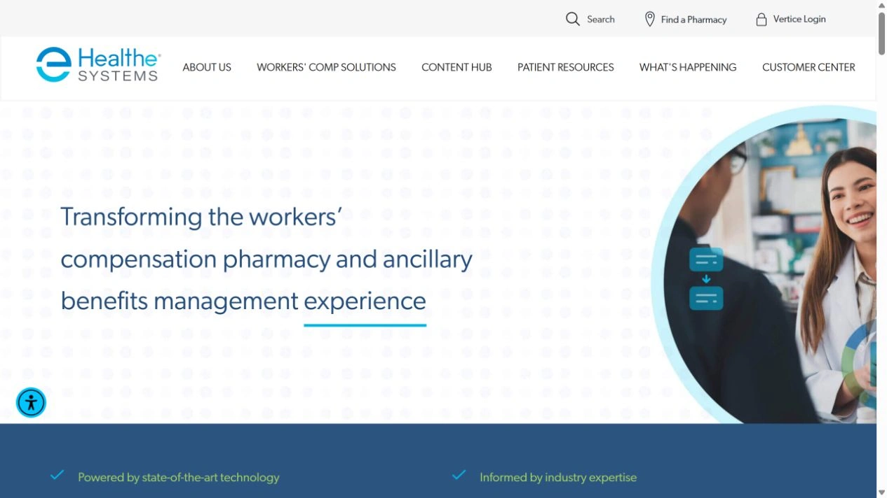
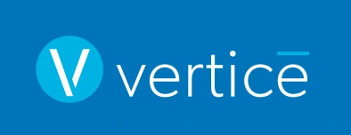
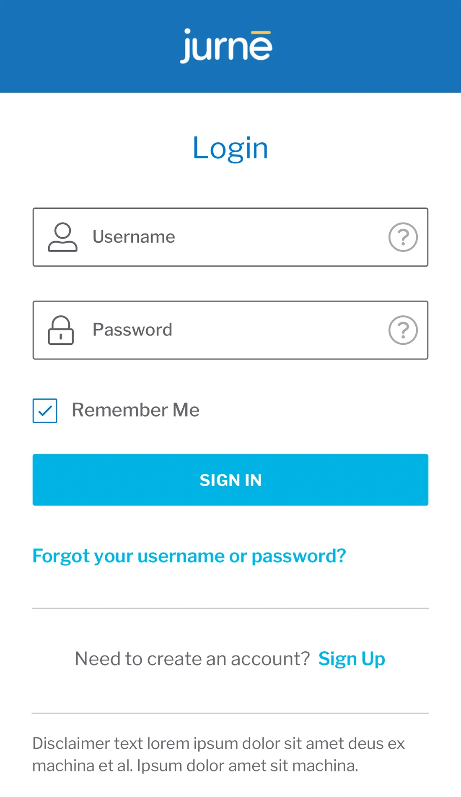
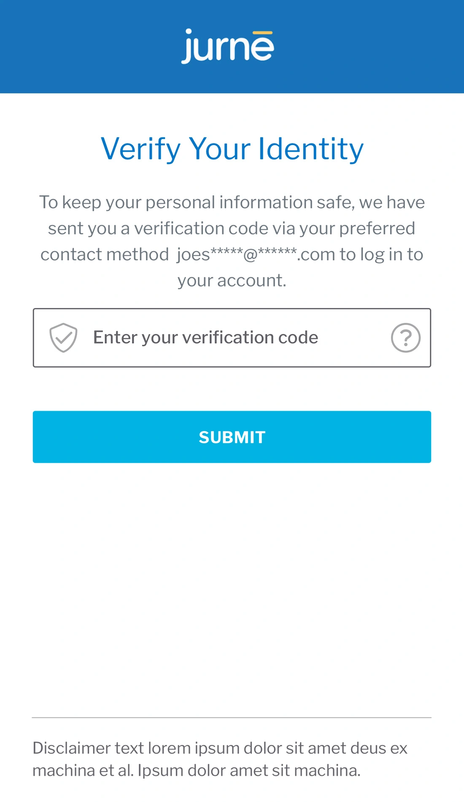

Healthcare products
Healthesystems & Jurne
Product design and front-end development across enterprise web and mobile applications.
RESEARCH · ARCHITECTURE · DESIGN LEADERSHIP
Leading the experience across products.
For several years, I was responsible for research, experience architecture, and design across Healthesystems’ core Vertice product, Jurnē mobile product, corporate website, and related marketing. I led a team of designers and developers while continuing to do much of the work myself as a senior individual contributor.
Corporate website & front-end development
I personally designed and built the entire corporate website, completing a responsive WordPress rebuild in 2021 with custom PHP, Oxygen, and purpose-built plugins. My broader front-end work included specialized kiosk sites and UIs, alongside experience design for RxInformer and the MedMonitor medication-search experience.
Visit Healthesystems ↗

ENTERPRISE PRODUCT DESIGN

Vertice — making complexity usable.
Over roughly four years, I led research, experience architecture, and design for Healthesystems’ primary enterprise product for workers’ compensation. I guided designers and developers while personally researching and designing complex workflows, helping rebuild hundreds of screens and establish a new product identity.
Research that changed the interaction.
For complex authorizations, research pointed toward a narrative approach: expressing the action as a sentence instead of an unexplained collection of fields. Other workflows used guided steps, while contextual help offered relevant screenshots, videos, and field-level guidance.
The 2.5 and 3.0 interface releases were associated with approximately 5% and 3% increases in application usage, respectively.
Project archive · Screens and concepts from the original engagement.

This screen helps customers and claims adjusters get a quick summary of claim volume, what claims they might need to work on, sorted by date but also sortable by color coded risk level, and search for a claim quickly.

Given that Workers’ Comp claims are often so complex that actions may not always be immediately intuitive, no matter how clean and managed the user experience is, I added inline help. At any time, a user can open the help panel and see screenshots, videos, text descriptions, and even highlight specific fields in the UI where they might be having trouble. This approach is similar to TurboTax’s tax advice bar. By inverting the help color scheme, it creates a visual separation between what is help, and what is live content.

Tying in to the Google API, and comparing that to an internal database of in-network pharmacies, the Pharmacy Search helps claims adjusters recommend pharmacies for prescription pickup.

A feature currently in development is a simple live chat module, to get help and advice from account managers and customer service represenatives.

One of the user experience innovations in Vertice is the “narrative” approach. Certain complex actions just don’t make sense if they are just fields in a form. By creating a sentence structure “you are being asked to authorize X numbers of trips in Y date range for Z locations”, we found that users were more readily able to understand what they were doing. User research pointed us in this direction. It’s one of the most well-liked features of the new UI.

Another approach used in some complex screens is to use a wizard to walk the user through the various actions needed to complete a complicated task. Work is broken up into tabs and sections.
Jurnē — mobile healthcare
I led research, experience architecture, and design for Jurnē, a mobile product for injured workers and claims adjusters spanning appointments, pharmacy pickups, billing, and related services. Alongside directing the team, I personally designed workflows and interfaces and contributed to UI development.
Project archive · Screens and concepts from the original engagement.






Supporting the product beyond the screen.
My responsibilities also extended to product and corporate marketing materials, conference booth designs, and video production. I connected these experiences to the same product story, supporting how Healthesystems explained and demonstrated its work to customers.
Clinical survey reports
Supported data collection and created custom digital landing pages for annual industry research. The 2019, 2020, and 2021 report experiences combined editorial content, data presentation, and front-end development.
View the 2019 report ↗